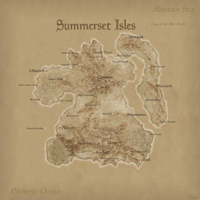

Острови Саммерсет (оріг. «Summerset Isles», варіанти перекладу: "Острови кінця літа", або "Острови літа, що спинилося") - архіпелаг з трьох островів на північний захід від Сіроділу. Головний острів має ту ж назву. Тут розміщується Кришталева Вежа, давній центр культури мерів. Cаммерсет проголосив незалежність від Тамріеля в 803 році Другої ери. Це найперша держава, яка проголосила незалежність. Альдмери прийшли на Саммерсет з Альдмеріса. На острові виділилися Альтмери і Кімери, останні емігрували з острова під керівництвом Святого Велота в Морровінд.